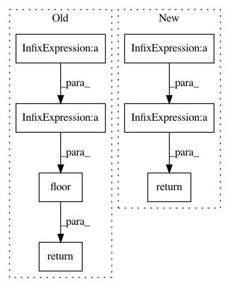

fbc4b0cbb4956fecce389a6e76f22f2112c84768,chaospy/distributions/collection/discrete_uniform.py,DiscreteUniform,_ppf,#DiscreteUniform#Any#Any#Any#,60
Before Change
def _ppf(self, q_data, lower, upper):
Point percentile function.
return (numpy.floor(q_data*(
numpy.floor(upper+1)-numpy.ceil(lower))+numpy.ceil(lower)))
def _mom(self, k_data, lower, upper):
Raw statistical moments.
return numpy.mean(numpy.arange(
After Change
Point percentile function.
lower = numpy.round(lower)
upper = numpy.round(upper)
return q_data*(upper-lower+1)+lower-0.5
def _mom(self, k_data, lower, upper):
Raw statistical moments.
return numpy.mean(numpy.arange(
In pattern: SUPERPATTERN
Frequency: 3
Non-data size: 7
Instances
Project Name: jonathf/chaospy
Commit Name: fbc4b0cbb4956fecce389a6e76f22f2112c84768
Time: 2020-07-13
Author: jonathf@users.noreply.github.com
File Name: chaospy/distributions/collection/discrete_uniform.py
Class Name: DiscreteUniform
Method Name: _ppf
Project Name: Microsoft/nni
Commit Name: afb4e78c5c9c4782482777fd8587c636711ab2e5
Time: 2019-08-04
Author: suiguoxin@gmail.com
File Name: src/sdk/pynni/nni/gridsearch_tuner/gridsearch_tuner.py
Class Name: GridSearchTuner
Method Name: _parse_quniform
Project Name: Microsoft/nni
Commit Name: e3c8552f3cad8b5ab0128a6eb27e3190506fe9d8
Time: 2019-08-04
Author: suiguoxin@gmail.com
File Name: src/sdk/pynni/nni/parameter_expressions.py
Class Name:
Method Name: quniform